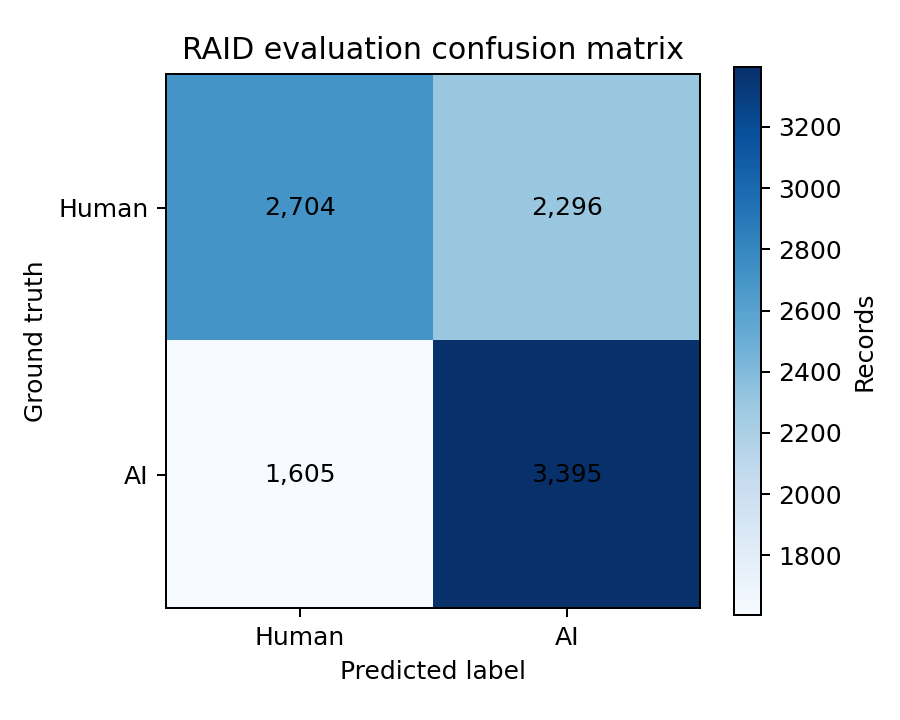
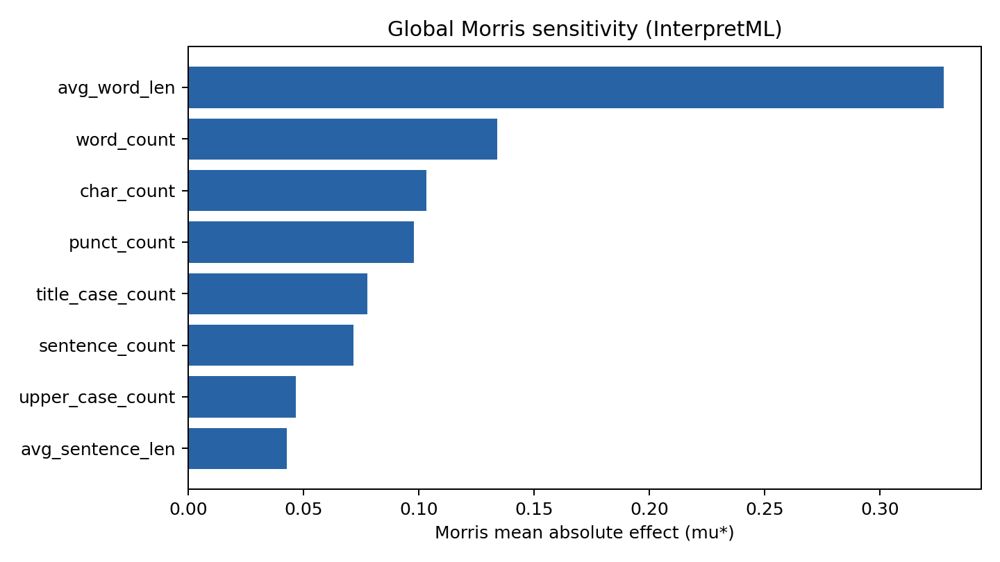
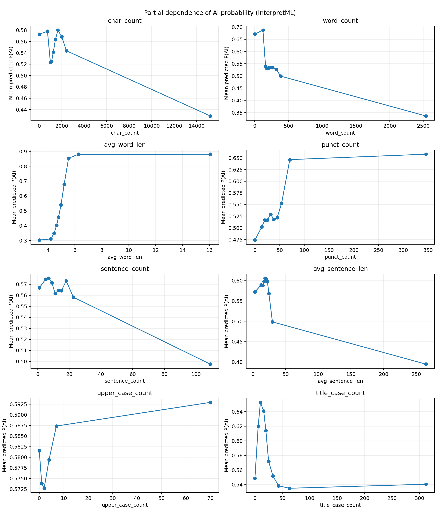

Abstract
This project evaluates and interprets a frozen Random Forest detector based on eight stylometric statistics. The pinned model artifact was checksum-verified and evaluated on a balanced, seeded sample of 5,000 human and 5,000 AI examples from the English RAID training split. No replacement model was trained. InterpretML-compatible global methods, LIME, Kernel SHAP, and a one-feature-at-a-time sensitivity analysis characterize behavior for the selected evaluation sample.
Results
The measured confusion matrix (actual rows: Human, AI; predicted columns: Human, AI) is [[2,704, 2,296], [1,605, 3,395]]. The detector's model card reports 96.03% on a separate evaluation; that figure was not reproduced in this project.

Global explanations
Morris sensitivity ranked average word length highest (0.3276), followed by word count (0.13395) and character count (0.103275). These are model sensitivity scores over the selected sample, not causal effects.

Partial dependence
The model response varies across the observed feature ranges. Average word length's first-to-last plotted grid values changed from P(AI)=0.303 to 0.881. PDP averages can include implausible combinations when features are correlated.

How implementation proceeded
- Pin inputs: fixed the model and RAID dataset revisions, recorded checksums, feature definitions, and the random seed.
- Prepare evaluation rows: streamed the English training split and selected balanced class reservoirs with seed 42.
- Validate inference: loaded the published Random Forest and checked the InterpretML probability adapter against the original estimator.
- Evaluate: measured accuracy, precision, recall, F1, ROC-AUC, and the confusion matrix on all 10,000 records.
- Explain: ran Morris and partial dependence globally, then LIME and Kernel SHAP on one example per outcome category; explored quantile-based one-feature changes.
- Package: committed code, configuration, figures, reports, and provenance to Git; large model/data files remain runtime downloads.
Execution used Python 3.12.3, InterpretML 0.6.10, and scikit-learn 1.6.1 on CPU. The measured global explanation sample was 500 rows. Four local cases were analyzed against a 50-row reference background. Full settings and caveats appear in the PDF and source files.
Local case examples
| Case | Actual / predicted | P(Human), P(AI) |
|---|---|---|
| Correct AI | AI / AI | 0.10, 0.90 |
| Correct human | Human / Human | 0.59, 0.41 |
| Human labeled AI | Human / AI | 0.38, 0.62 |
| AI labeled human | AI / Human | 1.00, 0.00 |
LIME and Kernel SHAP approximate the frozen classifier locally. They explain numeric feature behavior, not text spans or true causes.
Limits and responsible interpretation
- The 10,000-row evaluation sample is balanced and does not reflect deployment prevalence.
- Results are for one English pooled dataset and one pinned model; domain, generator, attacks, and language may change performance.
- Possible overlap between benchmark sources and the detector training corpus could not be fully ruled out.
- Stylometric features summarize surface patterns and can penalize legitimate writing variation.
- Counterfactual feature vectors need not correspond to valid text.
- Neither accuracy nor explanation establishes who authored a document.
Detailed literature survey: 25 papers
The survey includes annotated primary-source references across detection methods, benchmark and distribution shift, robustness and bias, linguistic signals, and explainability methods.
Literature Survey: Explainable Evaluation of AI-Generated Text Detection
Project problem: assess how well a frozen stylometric detector distinguishes human-written from machine-generated English text, then use interpretable machine-learning methods to describe the detector's global and local behavior. This survey reviews 25 research papers: 20 on detection, benchmark quality, robustness, bias, and linguistic signals, and 5 on explanation methods and interpretability. The references span 1991–2026. Links point to publisher or author-hosted primary records where available.
1. Detection methods and benchmark foundations
1.1 Statistical signals, benchmarks, and cross-domain transfer
Gehrmann, S., Strobelt, H., & Rush, A. M. (2019). “GLTR: Statistical Detection and Visualization of Generated Text.” ACL System Demonstrations, 111–116. ACL Anthology. GLTR visualizes token-level likelihood ranks and entropy to make statistical regularities in generated text inspectable. Its user study indicates that visual assistance can improve human detection performance, but the work frames the tool as an aid for inspecting text rather than an authorship oracle. It motivates explanations that expose the cues behind a detector, while also showing that humans need context to interpret those cues.
Uchendu, A., Ma, Z., Le, T., Zhang, R., & Lee, D. (2021). “TURINGBENCH: A Benchmark Environment for Turing Test in the Age of Neural Text Generation.” Findings of EMNLP 2021, 2001–2016. ACL Anthology. TURINGBENCH provides 200,000 human and generated samples across 20 model labels, with both binary detection and generator attribution tasks. Its central contribution is a shared evaluation environment: model rankings become meaningful only relative to explicit generators, tasks, and datasets. The benchmark predates current large-model diversity, so it also illustrates how detector conclusions age as generation systems change.
Rodriguez, J. D., Hay, J., Gros, D., Shamsi, J. A., & Srinivasan, P. (2022). “Cross-Domain Detection of GPT-2-Generated Technical Text.” NAACL-HLT 2022, 1213–1233. ACL Anthology. This study evaluates transfer between scientific domains and finds that a modest amount of target-domain data can improve detection in a new technical field. It establishes domain shift as a first-order issue: cues learned from one subject area need not transfer to another. The current project's RAID sample pools domains and does not claim domain-specific deployment performance.
Liang, W., Yuksekgonul, M., Mao, Y., Wu, E., & Zou, J. (2023). “GPT detectors are biased against non-native English writers.” Patterns, 4(7), 100779. DOI. Across seven detectors and essays by non-native and native English writers, the authors document elevated false-positive risks for non-native writing. The paper warns that simple lexical and syntactic regularity can be mistaken for machine authorship. Its sample and detector set are bounded, but its equity implication is directly relevant to stylometric features and any high-stakes use.
Mitchell, E., Lee, Y., Khazatsky, A., Manning, C. D., & Finn, C. (2023). “DetectGPT: Zero-Shot Machine-Generated Text Detection using Probability Curvature.” ICML 2023, PMLR 202, 24950–24962. PMLR. DetectGPT compares a candidate text's log probability under a reference language model with probabilities of perturbed variants, exploiting a curvature pattern observed in model-generated text. It demonstrated a strong zero-shot direction without training a conventional classifier, but needs access to a suitable scoring model and repeated perturbation queries. This differs from the evaluated project, which inspects a fixed detector using only eight numeric features.
Yang, X. et al. (2024). “DNA-GPT: Divergent N-Gram Analysis for Training-Free Detection of GPT-Generated Text.” ICLR 2024. arXiv. DNA-GPT compares a continuation in the candidate with regenerated continuations from a language model using n-gram divergence. It is a training-free detection strategy that can work with black-box generation access, but requires the ability to query a relevant generator and depends on continuation sampling. This highlights the distinction between detecting text from a known accessible generator and auditing an already deployed black-box classifier.
1.2 Broader and more realistic detector evaluation
Macko, D. et al. (2023). “MULTITuDE: Large-Scale Multilingual Machine-Generated Text Detection Benchmark.” EMNLP 2023, 9960–9987. ACL Anthology. MULTITuDE contains 74,081 samples across 11 languages and eight language models. It broadens benchmark coverage beyond English and tests whether detection behavior transfers across languages and generators. It supports treating language as an evaluation dimension rather than assuming a detector's English performance generalizes.
Wang, Y. et al. (2024). “M4: Multi-generator, Multi-domain, and Multi-lingual Black-Box Machine-Generated Text Detection.” EACL 2024, 1369–1407. ACL Anthology. M4 evaluates black-box detectors across multiple generation systems, subject domains, and languages. The paper reports generalization challenges when domains and generators differ from those seen during training. Its design informs a cautious reading of any single pooled score: aggregate performance can hide difficult slices.
Li, Y. et al. (2024). “MAGE: Machine-generated Text Detection in the Wild.” ACL 2024, 36–53. ACL Anthology. MAGE assembles diverse real-world-like detection tasks and evaluates 27 language models. Its results emphasize that detection becomes harder under distribution changes and realistic text conditions. It motivates reporting the evaluation source, sampling protocol, and intended scope alongside the score, as done in this project.
Bao, G. et al. (2024). “Fast-DetectGPT: Efficient Zero-Shot Detection of Machine-Generated Text via Conditional Probability Curvature.” ICLR 2024. ICLR Proceedings. Fast-DetectGPT estimates conditional probability curvature more efficiently than the perturbation-heavy DetectGPT approach and reports substantial speedups in its evaluated setting. It retains dependence on language-model probability access, and efficiency claims are tied to the authors' benchmark conditions. It illustrates a tradeoff between inference cost and access requirements.
Verma, V., Fleisig, E., Tomlin, N., & Klein, D. (2024). “Ghostbuster: Detecting Text Ghostwritten by Large Language Models.” NAACL-HLT 2024, 1702–1717. ACL Anthology. Ghostbuster computes probability-based features using weaker language models, selects feature combinations, and trains a classifier without access to the target generator's token probabilities. The paper evaluates essays, creative writing, and news, reporting strong results across several shifts. Its learned features remain model- and dataset-dependent; it is a distinct trained detector, not a post-hoc explanation of an arbitrary frozen detector.
Hans, A. et al. (2024). “Spotting LLMs With Binoculars: Zero-Shot Detection of Machine-Generated Text.” ICML 2024, PMLR 235, 17519–17537. PMLR. Binoculars contrasts the token-level behavior of two related pretrained language models to produce a zero-shot score. The authors report high detection performance under their tested models and datasets. Performance depends on reference-model choice, text length, and evaluation distribution, so reported low false-positive rates should not be read as universal guarantees.
Dugan, L. et al. (2024). “RAID: A Shared Benchmark for Robust Evaluation of Machine-Generated Text Detectors.” ACL 2024, 12463–12492. ACL Anthology. RAID includes over six million samples, 11 generators, eight domains, 11 attack types, and four decoding strategies. It was built to stress robustness across generators, domains, attacks, and decoding settings. This project uses a balanced 10,000-example sample from its training split; that offers broad-source evaluation but is not a complete RAID benchmark run, and possible source overlap cannot be excluded.
Wang, Y. et al. (2024). “Stumbling Blocks: Stress Testing the Robustness of Machine-Generated Text Detectors Under Attacks.” ACL 2024, 2894–2925. ACL Anthology. This paper applies editing, paraphrasing, co-generation, and prompting attacks to detectors and reports marked performance degradation across attacks. The results show that surface cues can be modified while preserving much of a text's meaning. A balanced static sample therefore estimates one operating condition, not resistance to adversarial rewriting.
Sadasivan, V. S. et al. (2025). “Can AI-Generated Text Be Reliably Detected? Stress Testing AI Text Detectors Under Various Attacks.” Transactions on Machine Learning Research, 2025. OpenReview. The authors analyze paraphrase-based attacks and argue both empirically and theoretically that small edits can reduce detector confidence without large perceived quality loss. The work frames reliable detection as a fundamental challenge when generated and human distributions overlap. It supports presenting detector outputs as uncertain evidence rather than definitive authorship attribution.
Tufts, B., Zhao, A., & Li, S. (2025). “A Practical Examination of AI-Generated Text Detectors for Large Language Models.” Findings of NAACL 2025, 4839–4856. ACL Anthology. This practical evaluation compares detectors on unseen models, datasets, and adversarial prompts, drawing attention to low true-positive rates at controlled false-positive operating points. It argues that headline accuracy alone can mislead when base rates and decision thresholds matter. The present study reports precision, recall, F1, ROC-AUC, and the confusion matrix, but does not calibrate deployment thresholds.
Doughman, J. et al. (2025). “Exploring the Limitations of Detecting Machine-Generated Text.” COLING 2025, 4274–4281. ACL Anthology. This work studies detector sensitivity to stylistic and readability changes and finds that such transformations can reduce performance substantially. It is relevant to a detector whose inputs are manually engineered style statistics: style cues may correlate with generation in a dataset while remaining easy to shift. Explanations of those features describe reliance, not validity or invariance.
1.3 Surface cues, linguistic structure, and distribution shift
Dutta Chowdhury, S. A., España-Bonet, C., & Van Genabith, J. (2026). “Formatting and Surface Feature Confounds in AI Text Detection: A Clever Hans Effect.” Findings of EMNLP 2026, 22266–22277. ACL Anthology. The paper studies benchmark artifacts and formatting effects, showing that surface cues can separate classes in a benchmark without providing stable evidence across benchmarks. Controlled reformatting reveals detector-specific sensitivity. Its “Clever Hans” framing maps closely to the risk that a stylometric detector exploits dataset conventions rather than a durable property of authorship.
El Attar, A., Dönmez, Ç., Maurer, M., & Falenska, A. (2026). “A Systematic Analysis of Linguistic Features in AI-Generated English Text Detection Across Domains and Models.” Findings of IJCNLP-AACL 2026, 181–208. ACL Anthology. Using 284 interpretable linguistic features across 30 LLMs and ten domains, this study examines which linguistic signals generalize. It finds that some lexical richness features can be more stable while many individual features depend on context, domain, or model. This cautions against assuming that a feature ranking from one balanced sample is universal.
Xia, M., Stańczak, K., & Roth, B. (2026). “Explaining Generalization of AI-Generated Text Detectors Through Linguistic Analysis.” EACL 2026, 6524–6546. ACL Anthology. This work relates detector performance shifts across prompts, models, and datasets to linguistic characteristics, including tense and pronoun patterns. It emphasizes that linguistic variation can explain why a model's score changes under distribution shift. Its feature-level analyses complement post-hoc explanations by connecting performance differences to properties of language, while not making those associations causal by default.
2. Explanation and model interpretation foundations
Ribeiro, M. T., Singh, S., & Guestrin, C. (2016). “Why Should I Trust You? Explaining the Predictions of Any Classifier.” KDD 2016, 1135–1144. DOI. LIME explains an individual prediction by fitting an interpretable surrogate to perturbed samples around that instance. Its explanation is local and depends on the perturbation distribution, distance weighting, and surrogate fit. In this project it approximates the frozen detector's probabilities for numeric feature vectors; it cannot identify which words caused a prediction.
Lundberg, S. M., & Lee, S.-I. (2017). “A Unified Approach to Interpreting Model Predictions.” NeurIPS 2017. NeurIPS. SHAP defines additive feature attributions using Shapley values and unifies several explanation approaches. Kernel SHAP estimates attributions for black-box models and can be computationally expensive; results depend on how missing features and the reference/background distribution are defined. The report therefore identifies the sampled background and treats contributions as approximate, model-relative associations.
Morris, M. D. (1991). “Factorial Sampling Plans for Preliminary Computational Experiments.” Technometrics, 33(2), 161–174. DOI. Morris proposes elementary effects as an efficient screening method for identifying influential input factors in computational models. Effects can reveal overall influence and nonlinearity or interactions, but depend on the sampled input region and factor scaling. They are not causal effects; here they summarize sensitivity over a selected sample of stylometric vectors.
Friedman, J. H. (2001). “Greedy Function Approximation: A Gradient Boosting Machine.” The Annals of Statistics, 29(5), 1189–1232. DOI. Friedman presents a general function-approximation framework and associated tools for interpreting fitted models. Partial dependence plots, developed in this line of work, show the average model response as a feature varies while averaging over observed values of other features. Correlated inputs and unrealistic combinations can distort interpretation. The project's one-dimensional partial dependence curves are descriptive averages over the sampled feature distribution.
Nori, H., Jenkins, S., Koch, P., & Caruana, R. (2019). “InterpretML: A Unified Framework for Machine Learning Interpretability.” arXiv:1909.09223. arXiv. InterpretML organizes glassbox and black-box interpretability methods behind a common interface. That interface makes it practical to compare global and local approaches in one workflow, but it does not remove the assumptions or limits of the underlying methods. This project uses InterpretML 0.6.10 to coordinate Morris sensitivity, partial dependence, LIME, and Kernel SHAP around a frozen classifier.
3. Synthesis and gap addressed by this project
The literature points to three persistent problems. First, detector performance changes with generator, topic, language, formatting, and attacks; therefore, one score cannot establish general reliability. Second, statistical or linguistic cues can be useful for screening yet encode dataset artifacts or penalize legitimate writing variation, creating fairness and misuse risks. Third, explanation tools answer narrower questions: global methods summarize behavior over a reference sample, while local methods approximate a specific model decision under a chosen perturbation and background distribution. Neither class establishes causality or authorship.
This project addresses a bounded methodological gap: it combines a reproducible evaluation of one pinned, frozen stylometric classifier on a balanced RAID sample with multiple global and local explanation methods, then discloses the sample construction, exact feature definitions, perturbation assumptions, and measured error rates. Unlike a new detector proposal, it does not claim state-of-the-art detection. The observed 60.99% accuracy and 0.6445 ROC-AUC, alongside errors in both classes, make the explanation and limitation analysis central to the result. Its contribution is a transparent case study of what a fixed detector does on a specified evaluation sample—not proof that it can reliably determine an individual's authorship.
Reproducibility and repository
GitHub repository: interpretml-ai-text-detector. Administrative cover-page fields (student name, USN, course, semester, guide) are marked “Not provided” because details have not yet been received.
To reproduce, install the pinned project requirements and run the experiment notebook. The first run streams a large RAID training split. Review the model revision and checksum before explicitly enabling the Joblib artifact loader.